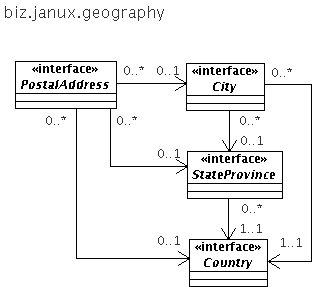

The biz.janux.geography package aims to support the handling and storing of Postal Addresses in the context of managing contact methods for {@link biz.janux.people.Person} and {@link biz.janux.people.Organization Organizations}; in the future, it may be extended to provide functionality for searching by geographic coordinates; the functionality of this package is exposed via the {@link biz.janux.geography.GeographyService} Service Facade.
The geography models a {@link biz.janux.geography.PostalAddress} object, and treats the {@link biz.janux.geography.City}, {@link biz.janux.geography.StateProvince State or Province}, and {@link biz.janux.geography.Country} associated to a PostalAddress as entities having an independent lifecycle; as illustrated below:
Nevertheless, the {@link biz.janux.geography.PostalAddress} interface also handles the case where the address must be parsed from unstructured or loosely structured text. In such situation, it may not be possible to reliably associate this address to City, StateProvince or Country entities, and these fields must be stored as strings. To this end, the PostalAddress interface provides methods such as {@link biz.janux.geography.PostalAddress#setCountryAsString setCountryAsString(String)} that can be used to store the various components of an address as Strings. This is treated in more detail in the documentation of the {@link biz.janux.geography.GeographyService}.
As a result, the relationships between Postal Address and the City/StateProvince/Countries entities are 0..* --> 0..1 to allow for situations where we may not be able to represent this data as entity, but must instead store them as strings.